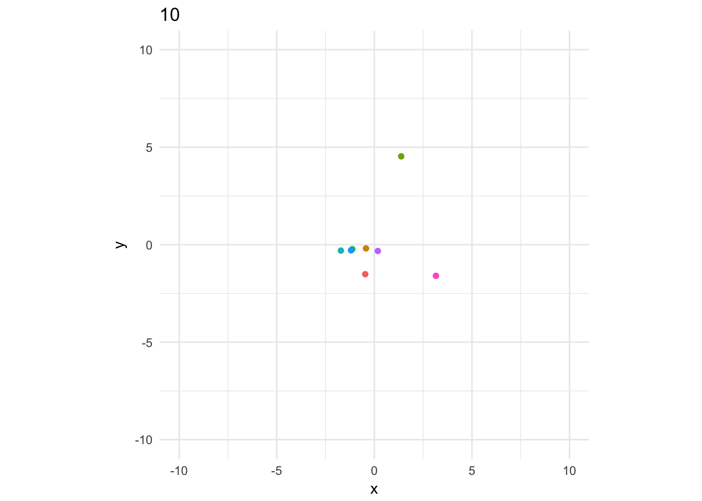
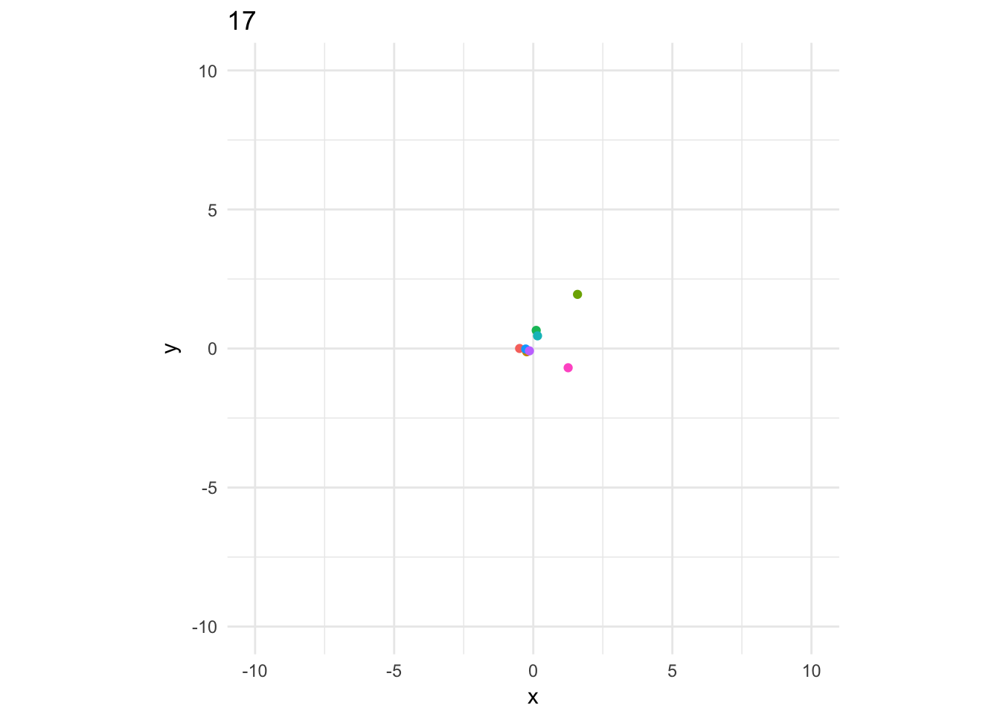
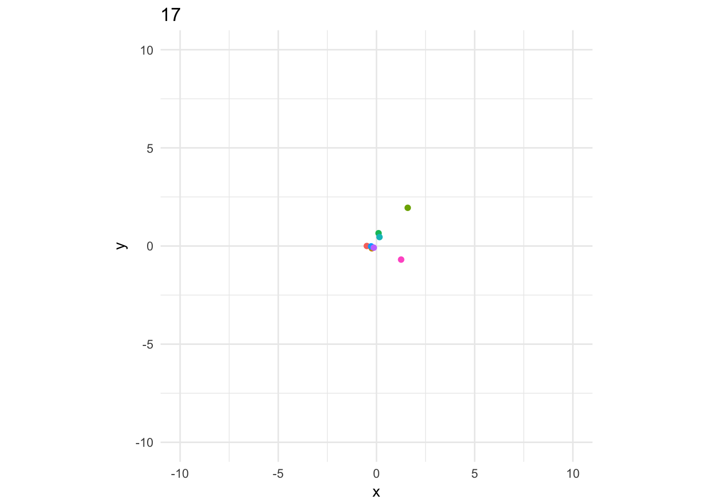
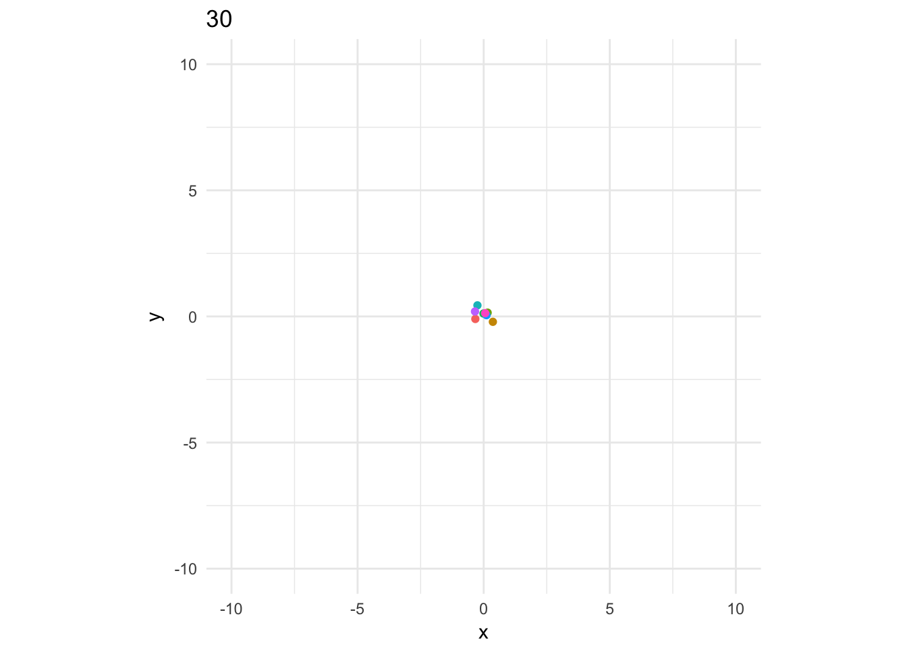
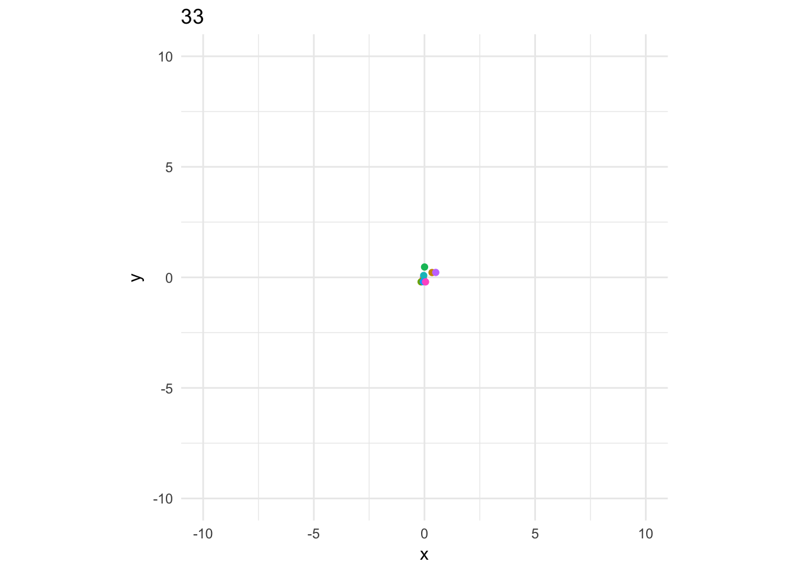
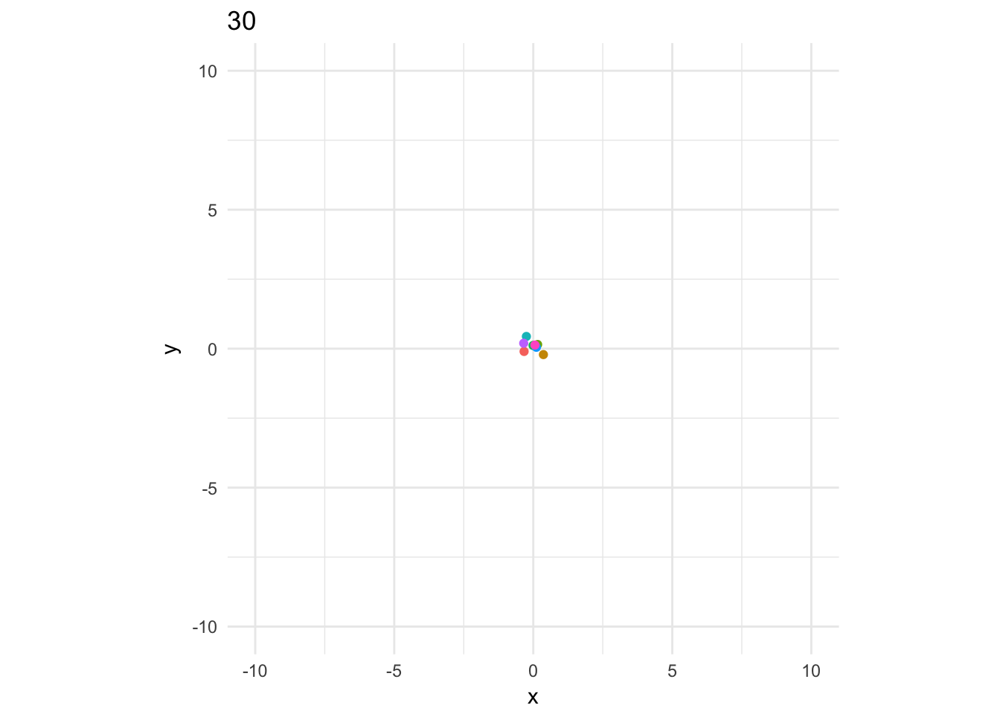
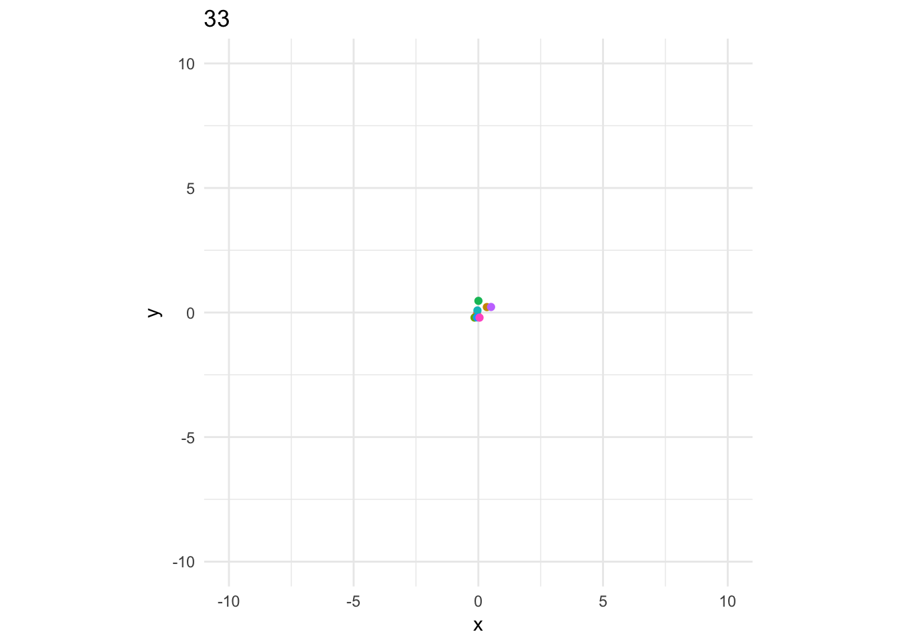

Positioning as traingles with equal sides
Wouter van Amsterdam
2018-02-03
Last updated: 2018-02-07
Code version: 8122e6c
Setup
Game definition
Consider the following challenge: a group of 50 people stands in a circle, each one is told to secretly pick two other persons (‘marks’). The objective for everyone is to move to such a position that they form a triangle with equal sides with respect to their two marks.
To add some details, say they are standing in a room with dimensions 20 by 20 meters. For starters, we will assume that people’s positions may coincide. If this is not the case, it is immediately clear that there does not always exist a solution: if 3 persons happen to choose the same 2 marks, since when 2 marks are chosen, exactly 2 points exist that form a traingle of equal sides with them (given that they the 2 marks don’t happen to stand on the same position). However, the chance of this happening is very small, the probability for 2 out of \(n\) people to have chosen the same two marks is \((n-1) * \frac{1}{n\choose{2}}\), the chance for 3 persons to have chosen the same 2 marks is even lower. Assume that the stride length is the same for everyone: 0.5 meters per step. People pick their marks randomly (you could pick other strategies, but this adds some nice randomness to the process)
R equivalent
Let’s put in in a picture
Initialize parameters, and load needed R-packages
library(data.table)
library(ggplot2)
library(magrittr)
npeople = 8
room_dims = c(20,20)
stride = 0.5
pspace = 0.3Initialize circle
r0 = 3 # radius of initial circle
df <- data.table(
id = 1:npeople
)
df[, c("x0", "y0"):=
list(r0 * cos(2*pi*(id-1)/npeople),
r0 * sin(2*pi*(id-1)/npeople))]
df[, id:=as.factor(id)]
circle0 <- df %>%
ggplot(aes(x = x0, y = y0, col = id)) +
geom_point() +
lims(x = c(-1,1)*room_dims[1]/2, y = c(-1,1)*room_dims[2]/2) +
coord_fixed() +
theme_minimal() +
theme(legend.position = "none")
circle0_labeled <-
circle0 +
geom_label(aes(label = id))
circle0_labeledLet’s pick random marks for each individual (excluding themselves)
**NB improve code with ‘by = “id”’
set.seed(1234)
df[, c("mark_a", "mark_b"):=data.frame(t(apply(.SD, 1, function(row)
sample(setdiff(factor(1:npeople), row[["id"]]), size = 2, replace = F))))]
setkey(df, id)
df[1:10, list(id, mark_a, mark_b)] id mark_a mark_b
1: 1 2 5
2: 2 6 5
3: 3 8 5
4: 4 1 2
5: 5 6 4
6: 6 5 4
7: 7 2 6
8: 8 3 6
9: NA NA NA
10: NA NA NAVisualize a few subject and mark pairs
df[, c("ma_x0", "ma_y0"):=.SD[as.character(mark_a), list(x0, y0)]]
df[, c("mb_x0", "mb_y0"):=.SD[as.character(mark_b), list(x0, y0)]]circle0 +
geom_segment(data = df[c(1)],
aes(x = x0, xend = ma_x0, y = y0, yend = ma_y0),
linetype = 2) +
geom_segment(data = df[c(1)],
aes(x = x0, xend = mb_x0, y = y0, yend = mb_y0),
linetype = 2)Model behaviour
Now let’s see if we can converge to a solution where everyone get’s to a position in which they are in a equal side triangle with their two targets.
Solution 1: single step towards goal
Say everyone has a keen eye for where they should stand, given that their targets stand at points \(x_{target_1},y_{target_1}\) and \(x_{target_2}, y_{target_2}\). With some math, we can see that the subject should move to one of 2 positions.
The target point for each subject lies on the circle with as center one of the marks (let’s take mark ‘a’ for simplicity), with a radius of the distance between mark a and mark b, and at a position of 60 degrees more or less than the angle between mark a and b.
Some restritions apply to this target point:
- it must be within the room
- when there are two options, choose the one that’s nearest by
Set target position
Let’s create a function to determine the target point for a subject (this took a piece of paper and some fiddling with the trigonometric functions)
get_target.single <- function(x0, y0, ma_x0, ma_y0, mb_x0, mb_y0,
if_none = "original") {
p0 = c(x0, y0)
ma = c(ma_x0, ma_y0)
mb = c(mb_x0, mb_y0)
m_center = (ma + mb) / 2
# calculate distance between mark a and b, and the angles between them
theta_a = atan2(ma_y0, ma_x0)
theta_b = atan2(mb_y0, mb_x0)
theta_ab = theta_b - theta_a
d_ab = sqrt(sum((mb - ma) ^ 2))
# target points are determined by taking a step from the middle between
# the marks
stride = (.5*d_ab) / tan(.5 * (1/6) * 2 * pi)
# calculate candidate target points
tx1 = m_center[1] + stride * cos(theta_a + theta_ab / 2)
ty1 = m_center[2] + stride * sin(theta_a + theta_ab / 2)
tx2 = m_center[1] - stride * cos(theta_a + theta_ab / 2)
ty2 = m_center[2] - stride * sin(theta_a + theta_ab / 2)
# ty1 = ma_y0 + radius * sin(angle_ab + 2*pi*60/360)
# tx2 = ma_x0 + radius * cos(angle_ab - 2*pi*60/360)
# ty2 = ma_y0 + radius * sin(angle_ab - 2*pi*60/360)
# check if both target points are within the room
t1_ok = abs(tx1) < room_dims[1] / 2 & abs(ty1) < room_dims[2] / 2
t2_ok = abs(tx2) < room_dims[1] / 2 & abs(ty2) < room_dims[2] / 2
# if 1 of both is ok, take that point
if (sum(c(t1_ok, t2_ok)) == 1) {
if (t1_ok) return(c(tx1, ty1))
return(c(tx2, tx2))
}
# if none are ok, return NA's or the original position
if (sum(c(t1_ok, t2_ok)) == 0) {
if (if_none == "original") return(c(x0,y0))
return(c(NA,NA))
}
# if both are ok, take the one that's closest by, or the first one
d1 = sqrt(sum((c(tx1, ty1) - p0) ^ 2))
d2 = sqrt(sum((c(tx2, ty2) - p0) ^ 2))
if (d1 <= d2) {
return(c(tx1, ty1))
}
return(c(tx2, ty2))
}
get_target <- function(x0, y0, ma_x0, ma_y0, mb_x0, mb_y0) {
df <- cbind(x0, y0, ma_x0, ma_y0, mb_x0, mb_y0)
targets <- apply(df, 1, function(x) {
get_target.single(x[[1]], x[[2]], x[[3]], x[[4]], x[[5]], x[[6]])
})
data.frame(t(targets))
}
df[, c("tx0", "ty0"):=get_target(x0, y0, ma_x0, ma_y0, mb_x0, mb_y0)]Check correctness of solutions
df[, t_correct:={
da = norm(matrix(c(tx0 - ma_x0, ty0 - ma_y0)), type = "F")
db = norm(matrix(c(tx0 - mb_x0, ty0 - mb_y0)), type = "F")
dab = norm(matrix(c(mb_x0 - ma_x0, mb_y0 - ma_y0)), type = "F")
max(dist(c(da, db, dab)) < 0.001)
}, by = "id"]Visualize target positions for a few subjects
samples = sample(1:npeople, size = 2)
circle0 +
geom_segment(data = df[samples],
aes(x = tx0, xend = ma_x0, y = ty0, yend = ma_y0)) +
geom_segment(data = df[samples],
aes(x = tx0, xend = mb_x0, y = ty0, yend = mb_y0)) +
geom_segment(data = df[samples],
aes(x = ma_x0, xend = mb_x0, y = ma_y0, yend = mb_y0)) +
geom_segment(data = df[samples],
aes(x = x0, xend = tx0, y = y0, yend = ty0),
arrow = arrow(), linetype = 2, alpha = .5)Take step to target position
Create a function to define a step to the target position
take_step.single <- function(x, y, tx, ty, stride = .5) {
direction <- c(tx, ty) - c(x, y)
direction_normalized <- direction / sqrt(sum(direction^2))
next_step = stride * direction_normalized
new_position = c(x, y) + next_step
}
take_step <- function(x, y, tx, ty, stride = .5) {
data = cbind(x, y, tx, ty)
as.data.frame(t(apply(data, 1, function(row)
take_step.single(row[1], row[2], row[3], row[4], stride = stride))))
}To track the positions for each participants, let’s create a new data structure.
# library(tibbletime)
# nsteps = 100
#
# positions <- create_series('00:00:00' ~ '00:05:00', 'second', class = "hms")nsteps = 100
stride = 0.5
positions <- array(dim = c(nsteps+1, npeople, 2),
dimnames = list(paste0("step-",0:nsteps),
paste0("id-", 1:npeople),
c("x", "y")))
positions[1,,1] <- df$x0
positions[1,,2] <- df$y0
## Set initial positions
df[, c("x", "y"):=list(x0, y0)]
for (i in 1:nsteps) {
df[, c("ma_x", "ma_y"):= .SD[as.character(mark_a), list(x, y)]]
df[, c("mb_x", "mb_y"):= .SD[as.character(mark_b), list(x, y)]]
df[, c("tx", "ty") := get_target(x, y, ma_x, ma_y, mb_x, mb_y)]
df[, c("x", "y") := take_step(x, y, tx, ty, stride = stride)]
positions[i+1,,1] = df$x
positions[i+1,,2] = df$y
}Plot x-coordinate of a subject, to see if this process converges
plot(positions[,1,1])Let’s try decreasing the step size after some time
nsteps = 100
stride = 0.5
strides= ((nsteps - 1:nsteps) / nsteps) * stride
positions <- array(dim = c(nsteps+1, npeople, 2),
dimnames = list(paste0("step-",0:nsteps),
paste0("id-", 1:npeople),
c("x", "y")))
positions[1,,1] <- df$x0
positions[1,,2] <- df$y0
## Set initial positions
df[, c("x", "y"):=list(x0, y0)]
for (i in 1:nsteps) {
stride = strides[i]
df[, c("ma_x", "ma_y"):= .SD[as.character(mark_a), list(x, y)]]
df[, c("mb_x", "mb_y"):= .SD[as.character(mark_b), list(x, y)]]
df[, c("tx", "ty") := get_target(x, y, ma_x, ma_y, mb_x, mb_y)]
df[, c("x", "y") := take_step(x, y, tx, ty, stride = stride)]
positions[i+1,,1] = df$x
positions[i+1,,2] = df$y
}Plot x-coordinate of a subject, to see if this process converges, but now weighted for the stride size
plot(positions[,1,1] / c(1,strides))Define how good a solution is
We can say that for each person, the cost is the sum of the differences between the distance between their marks and the distance of the subject to each mark.
\[cost = |d_{subject, mark_a} - d_{mark_a, mark_b}| + |d_{subject, mark_b} - d_{mark_a, mark_b}|\]
cost_function <- function(x, y, ma_x, ma_y, mb_x, mb_y) {
d_ab <- sqrt(sum((ma_x - mb_x)^2, (ma_y - mb_y)^2))
d_a <- sqrt(sum((x - ma_x)^2, (y - ma_y)^2))
d_b <- sqrt(sum((x - mb_x)^2, (y - mb_y)^2))
abs(d_a - d_ab) + abs(d_b - d_ab)
}Re run the simulation, keeping track of the cost (for each subject)
nsteps = 100
stride = 0.5
strides= ((nsteps - 1:nsteps) / nsteps) * stride
positions <- array(dim = c(nsteps+1, npeople, 2),
dimnames = list(paste0("step-",0:nsteps),
paste0("id-", 1:npeople),
c("x", "y")))
costs <- array(dim = c(nsteps+1, npeople, 1))
positions[1,,1] <- df$x0
positions[1,,2] <- df$y0
costs[1,,1] <- df[, list(cost = cost_function(x0, y0, ma_x0, ma_y0, mb_x0, ma_y0)), by = "id"]$cost
## Set initial positions
df[, c("x", "y"):=list(x0, y0)]
for (i in 1:nsteps) {
stride = strides[i]
df[, c("ma_x", "ma_y"):= .SD[as.character(mark_a), list(x, y)]]
df[, c("mb_x", "mb_y"):= .SD[as.character(mark_b), list(x, y)]]
df[, c("tx", "ty") := get_target(x, y, ma_x, ma_y, mb_x, mb_y)]
df[, c("x", "y") := take_step(x, y, tx, ty, stride = stride)]
positions[i+1,,1] = df$x
positions[i+1,,2] = df$y
costs[i+1,,1] <- df[, list(cost = cost_function(x, y, ma_x, ma_y, mb_x, ma_y)), by = "id"]$cost
}Gather costs in a convenient data.table format, and plot the costs per subject over time
cost_df <- as.data.table(costs)
cost_df[, id:=factor(rep(1:npeople, each = nsteps + 1))]
cost_df[, step:=rep(0:nsteps, times = npeople)]
cost_df %>%
ggplot(aes(x = step, y = costs, col = id)) +
geom_line()As we see, the cost decreases, but it never saturates.
Let’s now gather all the positions in a table, see if we can visualize this nicely
position_df <- as.data.table(positions)
position_df[, step:=rep(0:nsteps, times = npeople * 2)]
position_df[, coordinate:=rep(c("x", "y"), each = (nsteps + 1) * npeople)]
position_df[, id:=factor(rep(1:npeople, each = nsteps + 1, times = 2))]
position_df <- dcast.data.table(position_df, step + id ~ coordinate, value.var = "positions")Animate using gganimate (available on github)
library(gganimate)
p <- position_df %>%
ggplot(aes(x = x, y = y, col = id, frame = step)) +
geom_point() +
lims(x = c(-1,1)*room_dims[1]/2, y = c(-1,1)*room_dims[2]/2) +
coord_fixed() +
theme_minimal() +
theme(legend.position = "none")
gganimate(p)
 
 

Session information
sessionInfo()R version 3.4.3 (2017-11-30)
Platform: x86_64-apple-darwin15.6.0 (64-bit)
Running under: macOS Sierra 10.12.6
Matrix products: default
BLAS: /Library/Frameworks/R.framework/Versions/3.4/Resources/lib/libRblas.0.dylib
LAPACK: /Library/Frameworks/R.framework/Versions/3.4/Resources/lib/libRlapack.dylib
locale:
[1] en_US.UTF-8/en_US.UTF-8/en_US.UTF-8/C/en_US.UTF-8/en_US.UTF-8
attached base packages:
[1] stats graphics grDevices utils datasets methods base
other attached packages:
[1] gganimate_0.1.0.9000 magrittr_1.5 ggplot2_2.2.1
[4] data.table_1.10.4-3
loaded via a namespace (and not attached):
[1] Rcpp_0.12.14 knitr_1.18 munsell_0.4.3 colorspace_1.3-2
[5] rlang_0.1.6 stringr_1.2.0 plyr_1.8.4 tools_3.4.3
[9] grid_3.4.3 gtable_0.2.0 git2r_0.20.0 htmltools_0.3.6
[13] yaml_2.1.16 lazyeval_0.2.1 rprojroot_1.2 digest_0.6.14
[17] tibble_1.4.1 evaluate_0.10.1 rmarkdown_1.8 labeling_0.3
[21] stringi_1.1.6 compiler_3.4.3 pillar_1.1.0 scales_0.5.0
[25] backports_1.1.2 This R Markdown site was created with workflowr